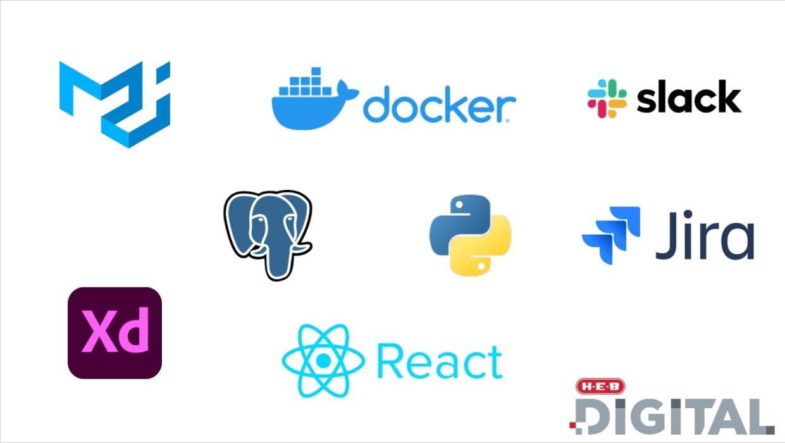

Recent Graduate from Trinity University
In May 2021, I graduated from Trinity University with a Bachelors of Science in Computer Science.
This included relevant coursework in Web Application Development, Software Engineering, Database Systems, Data Structures, and Algorithms.
Although I switched my major from Biology to Computer Science late into my university career, I walked away with a 3.8 mGPA.
Software Engineering Internship Experience
During my final year at Trinity, I had the opportunity to intern with H.E.B as part of my Senior Software course.
This allowed me to get a feel for the day-to-day life of a Software Engineer. As a result, I learned how to build a web application with React, how to build a Python API using FastAPI,
the ins and outs of Scrum methodology, and how to communicate effectively with team members.
